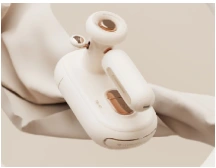
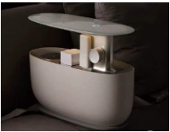
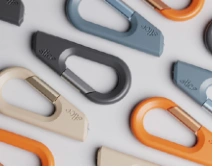
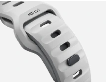
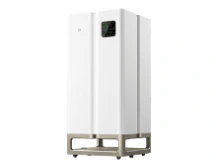
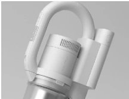
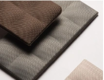
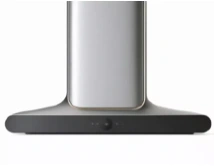
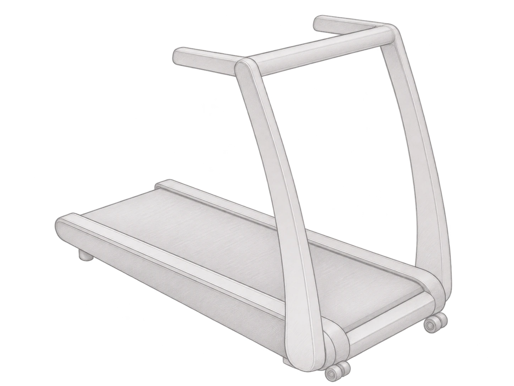

01星弧 ARC
家居陪伴
让运动轻松进入生活，让产品自然留在家中
家庭健康新家电设计提案 · 三种设计性格，一个共同目标。
让运动轻松进入生活，让产品自然留在家中
调节与转动，呈现机械之美
以克制线条与镜面收纳，融入有审美的日常
一家人的日常
电竞氛围的私享空间
包豪斯审美之家
把前期研究转化为设计依据，再逐步形成星弧、曜影、凌序三种性格。
01 / 产品与市场
梳理产品与竞品，寻找设计机会。
02 / 人群与生活
理解生活方式，明确体验诉求。
03 / 多方向设计探索
在不同方向中推敲轮廓、收纳与握持，再走向三稿深化。
从产品布局、市场表现到竞品功能与风格，建立新产品的研究起点。
第一轮：从产品走向生活方式。再从人群差异，延展出不同的产品机会。
从人群偏好、家庭结构与生活节奏，寻找家庭运动的切入点。
将人群差异延展为都市生活、家庭共享与进阶训练等产品机会。
以极简、克制、现代为基础，引入柔和轮廓、亲肤触感与家居化材质。




















让科技感融入日常，
以柔和的轮廓与触感，建立家居陪伴感。

01

Mirage 澄境
宽大纯平
02

Lynmate 灵伴
一机双用
03

Bamboo 竹韵
单手收纳
04

Zephyr 蝶悦
舒展轻盈
05

Origin 曜影
机械美感
06

Linear 凌序
格调设计
历史探索 · 本轮继续星弧、曜影、凌序三稿
家庭健康新家电
让运动融入日常，也让产品回应自己的生活方式。
从开始运动，到融入家中，串起完整的使用体验。

把运动放进日常。
关注运动空间与使用姿态。
让产品回应空间与个人偏好。
让运动轻松进入生活，让产品自然留在家中。
家居化轮廓
整机比例推敲
握持与屏幕体验
灵伴阶段的三组已有成果，共同构成星弧本轮深化的来路。
探索弧线、握持与屏幕，推敲人与框架的关系。
将立柱、跑台与握持区连为整体，建立连续轮廓与比例。
以双色拼接与细腻触感，延伸屏幕翻转、拨片等使用设想。
延续连续弧形与家居陪伴方向；本轮以全域跑台、下置电机的新STEP深化整机。
日常家居使用场景。
清楚呈现跑面、坡度与握持姿态。
使用、折平、竖放，需要完整衔接。
从不同视角看清轮廓、比例与整机关系。
点击图板可放大查看
进入星弧 3D 互动评审 ↗从轮廓到握持，再到屏幕与操作。
让亲和的设计性格，贯穿使用与闲置。
调节与转动，呈现机械之美。
可调高度把手
圆形关节语言
银橙材质细节
延续圆形关节与机械秩序。
探索圆形关节、前倾框架与环抱式握持。
将关节、框架和跑台连为整体，建立机械秩序与比例。
以低饱和钛金属、细腻哑光与温暖橙光，探索材质与交互。
延续圆形关节与机械秩序；本轮以全域跑台、下置电机的新STEP深化整机结构与比例。
日常家居使用场景。
先看现有抬升与人体比例，再补真实人物的训练氛围。
运动结束，产品如何回到日常生活。
从不同视角看清轮廓、比例与整机关系。
点击图板可放大查看
进入曜影 3D 互动评审 ↗圆轴、连接与前端出线，形成统一的设计表情。
高度适配，需要在相同视角下看清低位、高位与操作。
以克制线条与镜面收纳，融入有审美的日常。
克制框架比例
精致材质分区
清晰连接细节
凌序阶段的三组已有成果，共同构成凌序本轮深化的来路。
探索克制线条、多用途握持与精细连接。
推敲框架、操作区与跑台的关系，建立轻盈整机比例。
以阳极氧化铝、温润木质与精密旋钮，探索冷暖材质与日常操作。
延续克制框架与精致连接；本轮以新STEP深化整机，并继续推敲镜面分区与可选把手。

先看现有抬升与人体比例，再补真实人物的训练氛围。
运动结束，产品如何回到日常生活。
从不同视角看清轮廓、比例与整机关系。
点击图板可放大查看
进入凌序 3D 互动评审 ↗镜面下侧饰板与底面，延续克制的整体语言。
把个人偏好，带进每天最直接的触感。
星弧 · 家居陪伴 / 曜影 · 机械美感 / 凌序 · 极致美学与可选把手
希望共同判断：哪种方向最契合品牌？哪些体验最值得继续深化？
三款均由厂商评估选用镜面底面；星弧、凌序的效果图待按原造型重做。
在原有支撑之外，增加可收拢、可外展的脚座研究。
镜面底面与增稳机构可分别评估；把手材质选择仅属于凌序，沿用原有选项。
自由滚动 / 左右键跳页 · 点击图片放大 · Esc关闭 · 浏览器打印可导出PDF